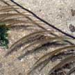
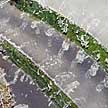

|
|
| other cnidarians text index | photo index |
| Phylum Cnidaria > Class Hydrozoa |
| Photo
index of hydroids on Singapore shores feathery, fern-like, grass-like cnidarians |
| 10-15cm long densely branching with fine 'stems'. Usually bright orange. On coral rubble. Sometimes seen on some of our Northern shores. | 5-10cm long with small capsules along the side branches. Pink or orange. On boulders, jetties. Commonly seen on some of our Northern shores. | 10-15cm long forming a fern-like shape. Usually bright orange. On boulders and coral rubble. Sometimes seen on some of our Northern shores. | This jellyfish belongs to Class Hydrozoa. Bell about 10cm across, thin thread-like tentacles about 25cm long. Sometimes seen on our Northern shores. | |
|
|
 |
 |
||
| 4-20cm long. Transparent or white fern-like 'leaves' on black branches. Stings powerfully. On coral rubble. Commonly seen on some of our shores. | 10-20cm long. Sparsely branched or unbranched black branches. On coral rubble. Commonly seen on Beting Bronok. | 2m or longer. Unbranched feather. Usually in deeper water on our Southern shores. Sometimes fragments are washed ashore. | 0.5cm or shorter. Feathery, grows in rows on seagrass blades. Sometimes seen on some of our shores. | |
|
Not
a hydroid
|
||||
| 5-8cm long with large polyps (1cm) in capsules along the side branches. White, beige, orange. On boulders, jetties. Commonly seen on some of our Northern shores. | 10-20cm long. Short thick 'stems' that branch on one plane. Transparent or beige. Among seaweeds and seagrasses, also on boulders, jetties. Does not sting. Commonly seen on some of our Northern shores. |


how to tell apart animals with a ring of feathery arms
|
photo
index of
cnidarians on this site
|